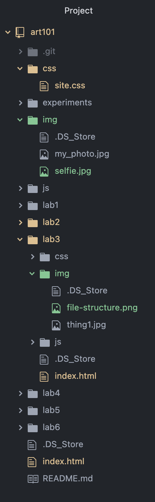

The main idea of this lab is to further enhance our understandings of what we have already learned about HTML to create a local file structure on our computer. Along with idex.html files and uploading it all to the server.
It was hard at first understanding how padding and margins worked. I knew I wanted even boarders around different sections of the website but was not sure how that worked. After studying some examples on W3 schools and inspecting the professors website it became easier. Then I was able to use what I already knew with css to create the designs I liked. W3 schools really helped. It was easy understanding the file structures because I have to already work with file paths and file structures for my major.
Was able to create the index.html file and design a website I like plus here is my file structure.
